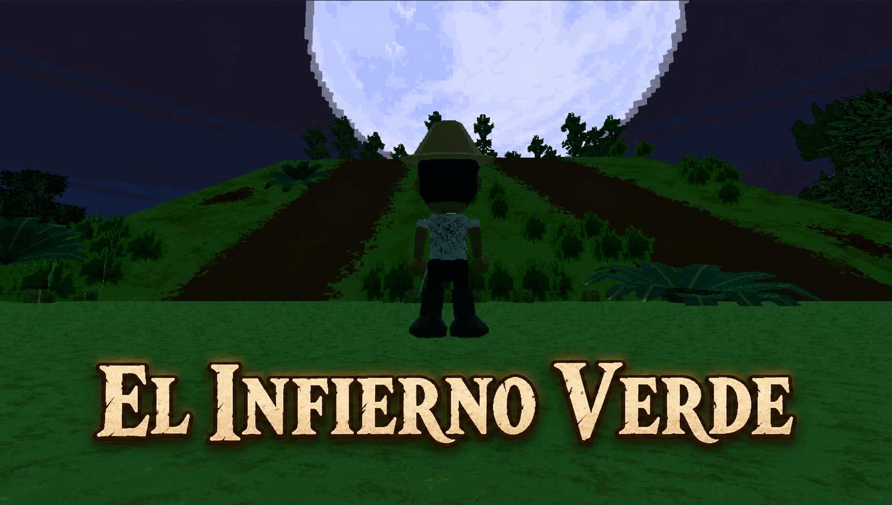
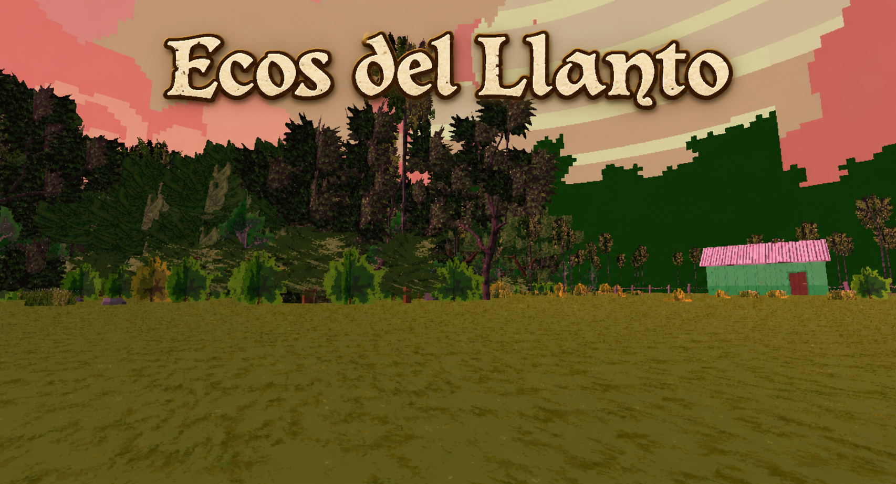
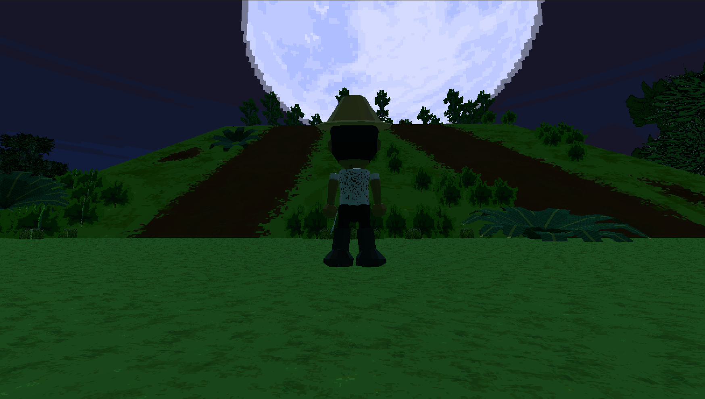
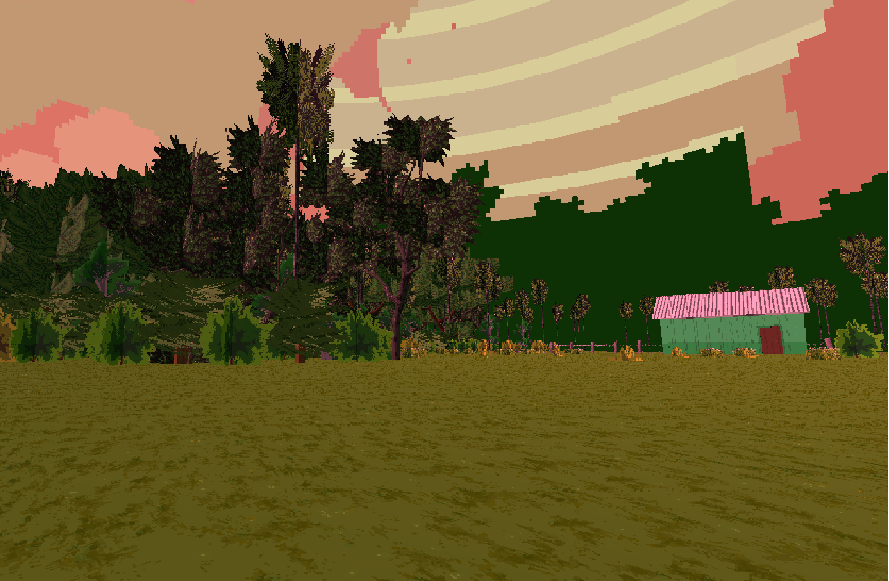

Camino a la Fiesta
Una historia que nos lleva a mirar un hecho popular desde la memoria y la tradición.
Historias no contadas
“Cuando un pueblo conoce su historia, también comprende quién es.”



Relatos Ocultos nace para dar nueva vida a historias paraguayas que siguen siendo parte de nuestra memoria, aunque muchas veces pasen desapercibidas. Aquí no solo hablamos de guerras o héroes: también de leyendas, relatos populares, voces del interior y recuerdos que forman parte de quiénes somos. Nuestro propósito es simple: despertar curiosidad, invitar a descubrir y acercar nuestra cultura de una forma distinta. Porque conocer nuestras historias también es una manera de entender el Paraguay.
Historias que siguen vivas. Exploramos hechos, leyendas y memorias que forman parte de la identidad paraguaya.
Aprender jugando. Cada relato se convierte en una aventura donde explorar también significa descubrir.
Preservar lo nuestro. Compartir estas historias es una forma de mantener viva la memoria del país.
Cada relato abre una puerta distinta al Paraguay. Algunos nacieron de hechos reales. Otros viven en la tradición oral. Todos guardan una parte de nuestra historia.
Una historia que nos lleva a mirar un hecho popular desde la memoria y la tradición.

Un relato marcado por el trabajo duro, el monte y una parte dolorosa de nuestra historia social.

Una leyenda que une emoción, enseñanza y tradición oral del pueblo paraguayo.
Queremos que más personas puedan descubrir nuestra historia desde una forma distinta. Relatos Ocultos busca unir juego, memoria y cultura para mostrar que el Paraguay también está hecho de relatos que merecen ser contados. No buscamos dar respuestas cerradas. Buscamos despertar preguntas.
Nivel 1
Durante este nivel podrás:


Descarga el juego gratis y experimenta los relatos interactivos. Elige la plataforma desde la que deseas disfrutar de la experiencia.